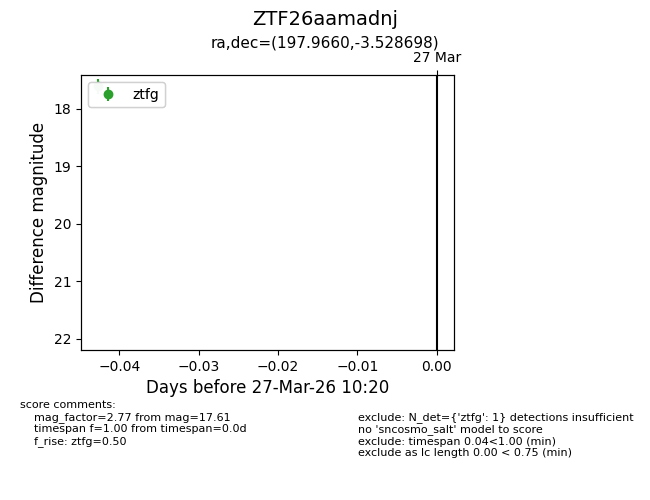
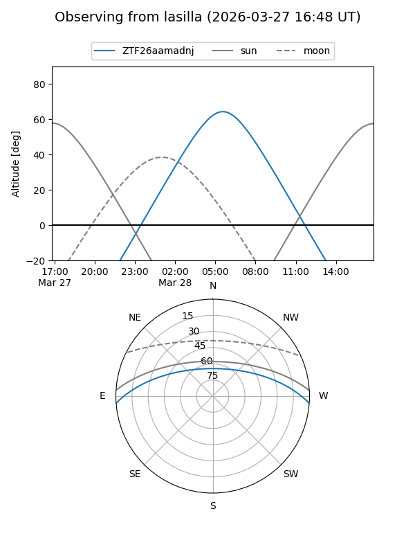
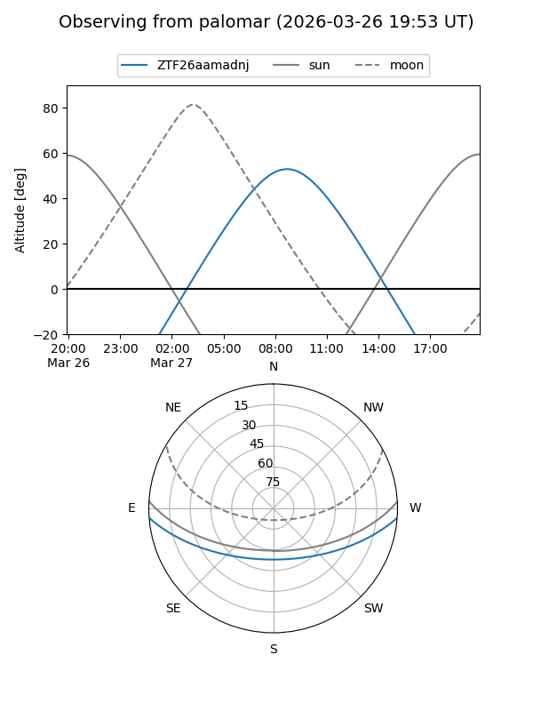

ZTF26aamadnj
Target ZTF26aamadnj at 2026-03-27 10:23
Aliases and brokers:
FINK: link
Lasair: link
ALeRCE: link
alt names
ZTF26aamadnj (ztf,fink_ztf)
Coordinates:
equatorial (ra, dec) = 197.9660,-3.52870
equatorial (HMS+DMS) = 13:11:51.83,-03:31:43.31
galactic (l, b) = (312.8497,+58.94916)
Flags:
Photometry:
last ztfg=17.61
1 ztfg detections
Lightcurve

Visibility


Additional plots